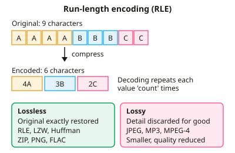

A-level Computer Science Year 13 · Topic 13
Exchanging data
Exchanging data covers how data is compressed, protected and sent between computers.
We will compare compression methods, symmetric and asymmetric encryption, digital signatures and certificates.
Then we revisit networks, protocols, packet switching, network security, web technologies and how search engines rank pages.
- 8 subtopics
- 355 questions
- Free: 13.1 notes and 10 questions
In this topic
- 13.1Data compression: lossy and lossless, run-length encoding and dictionary codingFree below · 24 questions
- 13.2Encryption: symmetric and asymmetric, digital signatures and certificatesOpen in Full Marks · 31 questions
- 13.3Networks: LANs, WANs, topologies, client-server and peer-to-peerOpen in Full Marks · 66 questions
- 13.4Network protocols, the TCP/IP stack and DNSOpen in Full Marks · 73 questions
- 13.5Packet switching, circuit switching, routers and gatewaysOpen in Full Marks · 28 questions
- 13.6Network security: firewalls, proxies and threatsOpen in Full Marks · 73 questions
- 13.7Web technologies: HTML, CSS, JavaScript and client-side versus server-side processingOpen in Full Marks · 34 questions
- 13.8Search engine indexing and the PageRank algorithmOpen in Full Marks · 26 questions
13.1 · Free notes
Data compression: lossy and lossless, run-length encoding and dictionary coding

Key points
- Data compression reduces file size, so less storage is needed and files transmit faster using less bandwidth.
- Lossless compression lets the original data be rebuilt exactly. It is essential for text, program code, databases and medical images. Examples: ZIP, PNG, FLAC.
- Lossy compression permanently discards the data humans are least likely to notice, giving much smaller files. The discarded data cannot be recovered. Examples: JPEG, MP3, MPEG-4.
- Lossy methods include reducing colour depth, resolution, sample rate or bit depth, and removing inaudible frequencies (perceptual coding).
- Run-length encoding (RLE) replaces each run of identical consecutive values with a (count, value) pair, e.g. AAAABBBCC becomes 4A3B2C. It is lossless.
- RLE works best where there are long runs: simple graphics, bitmaps with flat colour, fax. With few repeats it can make data larger, e.g. ABC becomes 1A1B1C.
- Dictionary coding (e.g. LZ77, LZW) replaces repeated sequences with shorter codes or references to entries in a dictionary. It is lossless and suits text with repeated words or phrases.
- In dictionary methods the decoder either receives the dictionary with the data (a static dictionary, which adds overhead) or rebuilds it while decoding (adaptive, as in LZW).
- Huffman coding is a lossless method that gives shorter bit patterns to frequent characters and longer ones to rare characters, based on a frequency tree.
- Compression ratio = original size ÷ compressed size. Percentage saving = (original − compressed) ÷ original × 100.
- Justify the choice in context: use lossless where exact reproduction matters, and lossy where small size matters more than perfect fidelity (e.g. streaming). Repeated lossy re-saving causes cumulative quality loss.
In more detail
- Worked bitmap RLE: the row 0000000011111000 becomes 8 × 0, 5 × 1, 3 × 0.
- Worked dictionary coding: with A = 1 and B = 2, "ABABABA" adds AB = 3, BA = 4 and ABA = 5 as it goes, and is sent as 1, 2, 3, 5: four codes for seven characters.
- Worked lossy audio: MP3 removes sounds masked by louder ones, often achieving about 10 : 1.
- Worked JPEG: the image is split into 8 × 8 blocks, and fine high-frequency detail is discarded.
- Worked choice: medical scan archives use lossless compression, so no diagnostic detail is lost.
Practice
Data compression: lossy and lossless, run-length encoding and dictionary coding: 10 questions
Pick an answer to check it, or open the answer for the explanation.
1. Which of the following file formats uses lossless compression?
- PNG
- MPEG-4 video
- JPEG
- MP3
Show answer
A: PNG. PNG uses lossless compression, so the image is restored exactly. JPEG, MP3 and MPEG-4 all discard data permanently, which makes them lossy.
2. Using run-length encoding (count then value), what is the encoding of WWWWWBBWWW?
- 5W2B1W
- W5B2W3
- 10W2B
- 5W2B3W
Show answer
D: 5W2B3W. There are three runs: five W, two B, then three W, giving 5W2B3W. Separate runs of the same value are not merged.
3. A run-length encoded string is 3X2Y4Z. How many characters does the decompressed data contain?
- 24
- 9
- 6
- 12
Show answer
B: 9. Add the counts: 3 + 2 + 4 = 9 characters (XXXYYZZZZ). Multiplying the counts would be wrong.
4. A row of 200 white pixels (1 byte each) is stored as one RLE pair of 2 bytes (count, colour). What is the compression ratio for this row?
- 198:1
- 200:1
- 2:1
- 100:1
Show answer
D: 100:1. Ratio = original ÷ compressed = 200 bytes ÷ 2 bytes = 100, written 100:1. The 198 bytes is the saving, not the ratio.
5. Why is RLE a poor choice for compressing a photograph with many slightly varying colours?
- RLE needs a dictionary sent with the file
- RLE is lossy so quality would drop
- There are few long runs of identical values, so output may grow
- RLE only works on text files
Show answer
C: There are few long runs of identical values, so output may grow. Photographs have few long runs of identical values, so each pixel becomes its own (1, value) pair and the file can get bigger. RLE is lossless and works on any data.
6. A 600-character text contains the 6-character word SYSTEM 20 times. Each is replaced by a 1-character code. How many characters remain, ignoring the dictionary?
- 500
- 480
- 580
- 120
Show answer
A: 500. Each of 20 occurrences shrinks from 6 to 1 character, saving 5 each = 100. So 600 − 100 = 500 characters, before counting the dictionary entry itself.
7. Why is lossy compression unsuitable for a program's executable file?
- Executables are too large to compress
- Executables are already stored using RLE
- Altered bytes would corrupt the program
- Lossy methods only work on audio
Show answer
C: Altered bytes would corrupt the program. Lossy compression discards data permanently. Even a few changed bytes in machine code could make the program crash, so executables need lossless compression.
8. What happens to the detail discarded when an image is saved as a JPEG?
- It is held in a dictionary for later use
- It is restored when the image is opened
- It is moved to a separate file
- It is permanently lost and cannot be recovered
Show answer
D: It is permanently lost and cannot be recovered. Lossy compression permanently removes data, so the original cannot be rebuilt exactly from the compressed file.
9. A 12 MB file is compressed to 3 MB. What is the percentage reduction in file size?
- 25%
- 400%
- 75%
- 9%
Show answer
C: 75%. (12 − 3) ÷ 12 × 100 = 75%. The figure 25% is the compressed size as a fraction of the original, and 4:1 is the ratio.
10. Which statement about dictionary-based compression is correct?
- It removes sounds that humans cannot hear
- It replaces repeated sequences with shorter codes
- It only works on runs of identical characters
- It always discards data permanently
Show answer
B: It replaces repeated sequences with shorter codes. Dictionary coding replaces repeated sequences with shorter references to dictionary entries and is lossless. Removing sounds is lossy audio coding, and runs of identical values describe RLE.
Keep going in Full Marks
Full Marks has 24 questions on Data compression: lossy and lossless, run-length encoding and dictionary coding (14 more than here), set out in practice levels. You also get notes and 3D models for all 8 subtopics of Exchanging data, plus games, timed exams and past papers.